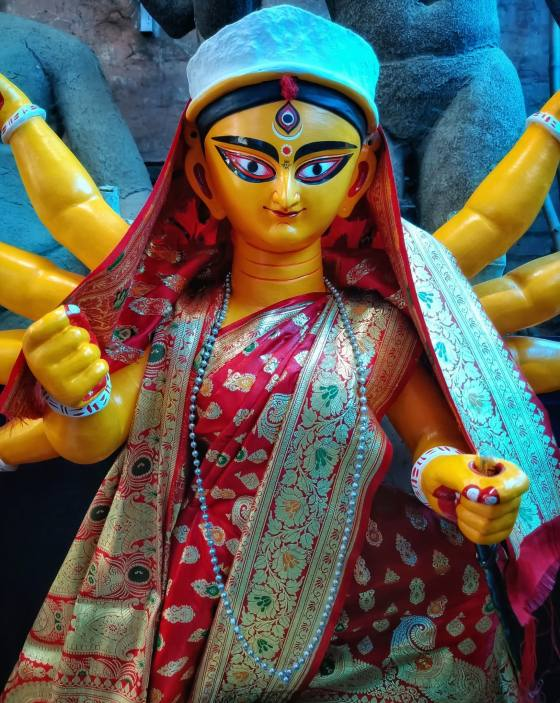
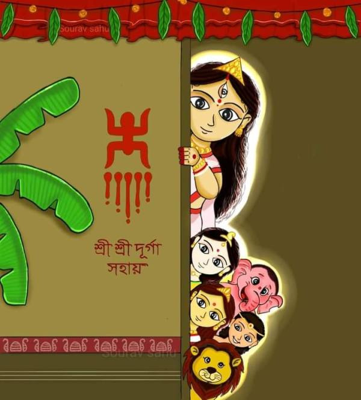
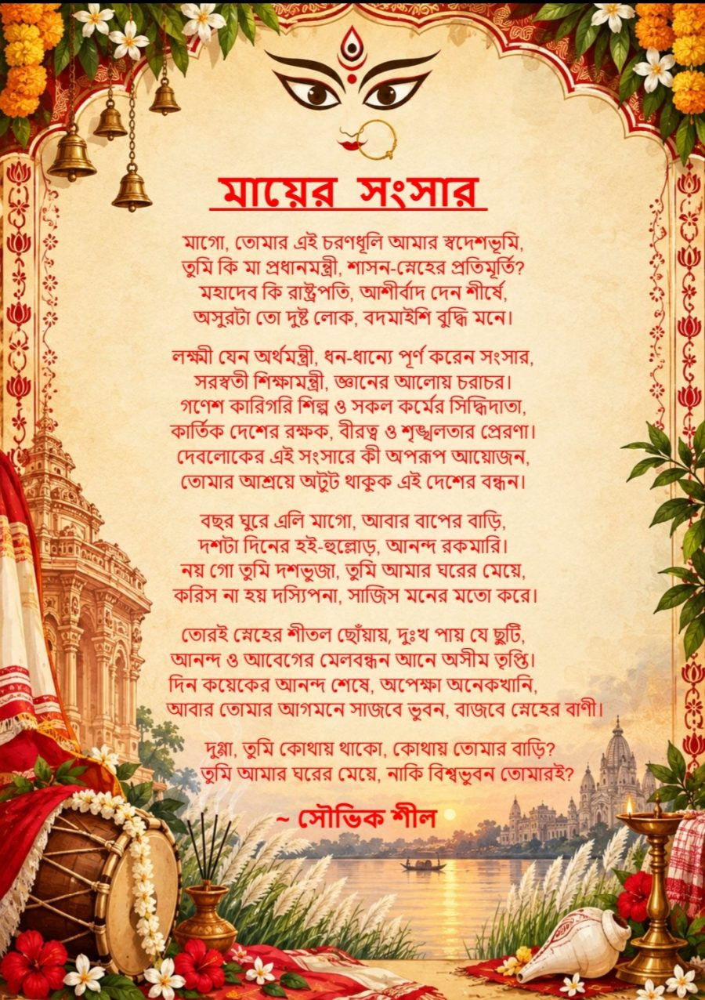
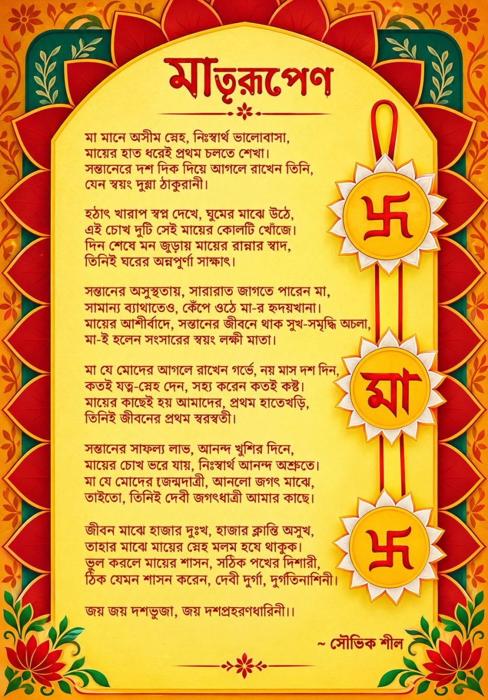

মা আসছেন — আসুন উৎসবে মেতে উঠি
Durga Puja is Bengal's biggest festival — five days of dhak, alpona, bhog and pandal-hopping. Send a heartfelt wish to someone you love, then scroll to plan your Kolkata Pujo: pandals, routes, food, outfits and quiet places to unwind.


📅 Durga Puja 2026 · Calendar
Mahalaya Sat 10 Oct
Shashthi Fri 16 Oct
Saptami Sat 17 & Sun 18 Oct
Ashtami Mon 19 Oct
Nabami Tue 20 Oct
Bijaya Dashami Wed 21 Oct
সৌভিকের তরফ থেকে শুভ শারদীয়ার শুভেচ্ছা।
🪷 Send your wishes
✨ Explore Pujo · সব এক জায়গায়
🥁 Five days of Pujo
Bodhon: the goddess is awakened and her face unveiled.
Kola Bou (Nabapatrika) bathing; pushpanjali begins.
Kumari Puja and the sacred Sandhi Puja at the Ashtami–Navami junction.
Final pushpanjali, homa and the busiest pandal nights.
Sindoor Khela and bidding Maa farewell — "আসছে বছর আবার হবে".
✍️ সৌভিকের কলমে · Pujo writings
Read Souvik's own poems on Maa — মায়ের সংসার and মাতৃরূপেণ.


📸 Moments of Pujo
🛕 Featured pandals
💡 Pandal-hopping tips
🤖 Need help planning?
Ask the Pujo Guide for routes, food and outfit ideas.
Kolkata pandal map · মানচিত্র
✍️ সৌভিকের কলমে · Souvik's Pujo Writings
Two original Bengali poems on Maa Durga, written by সৌভিক শীল. Tap a poster to read it full screen.